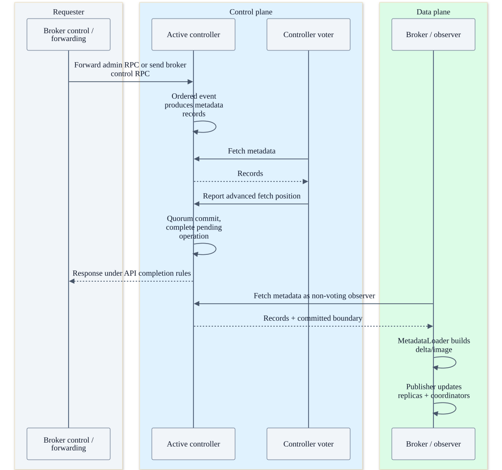
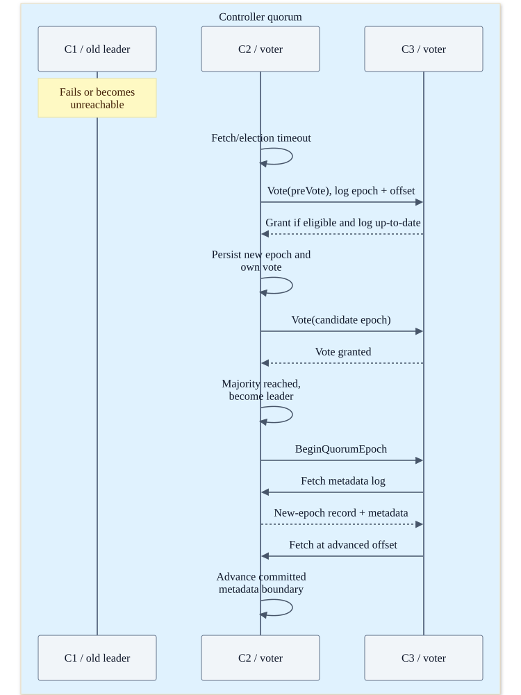
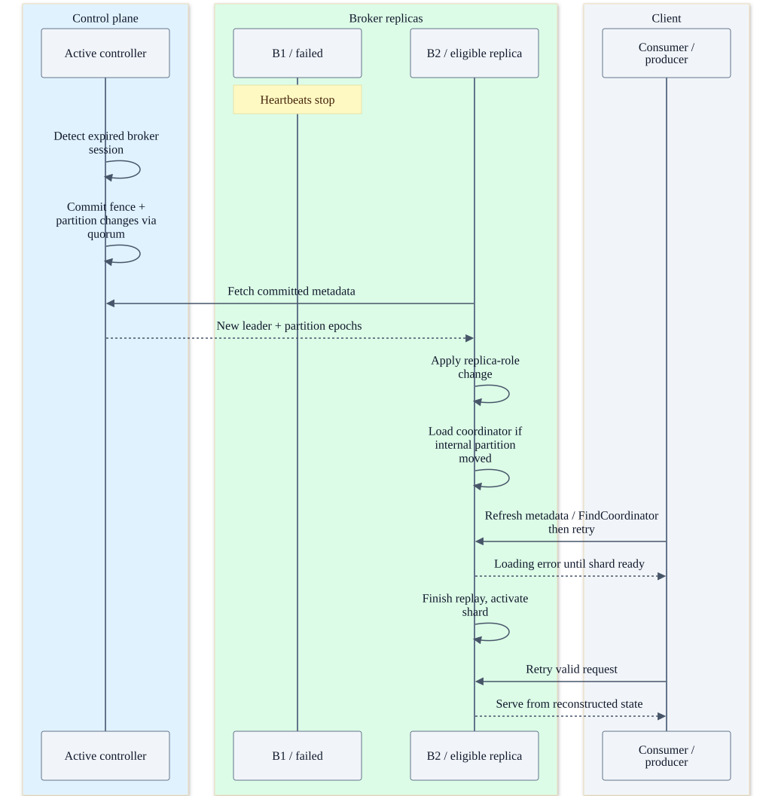

Chapter 21 · source-backed Kafka deep dive
Kafka leadership, metadata and broker failure
First separate the owners. Then follow controller election, committed metadata propagation, partition failover and the limits of recovery.
1. There is no single leader broker
| Role | Unit of ownership | Durable truth / selection |
|---|---|---|
| Active KRaft controller | Cluster metadata decisions | Metadata quorum elects one leader; a majority of controller voters commits metadata. |
| Partition leader | One user or internal topic partition | Controller chooses an eligible replica and records the change; followers pull the leader’s log. |
| Group coordinator | Groups hashing to one __consumer_offsets partition | That internal partition’s leader owns the shard. Consumer-group leader is a different client-side concept. |
| Transaction coordinator | Transactional IDs hashing to one __transaction_state partition | That partition’s leader owns transaction metadata and marker-recovery work. |
| Share coordinator | Share keys hashing to one __share_group_state partition | Owns durable delivery state, not the source records or share-group membership. |
Controller election is Raft. User-topic replica election is not a separate Raft election per partition. The controller records a new partition owner; brokers learn it through committed metadata. Coordinators inherit ownership from their backing partition, so there is no additional vote for each group or transactional ID.
One cluster, several independent owners
Illustrative placement: these are roles inside processes, not one required pod per box. The controller assigns partition leaders; backing-partition leadership determines coordinator ownership.

2. Processes, pods, listeners and threads
A common production layout has separate controller processes and broker processes spread across failure domains. Combined broker/controller mode is a deployment option, not a requirement that the two roles share a pod. In Kubernetes, a pod is the scheduling/failure container; Kafka’s protocol names broker IDs, controller IDs, topic partitions, epochs and endpoints—not pods.
| Inside a process | Execution / communication boundary | What not to assume |
|---|---|---|
| Controller | KafkaRaftClientDriver polls the Raft client; QuorumController serializes control events through its event queue. | Each topic does not have a dedicated controller process or consensus thread. |
| Broker networking | Socket processors receive Kafka requests; request handlers route to KafkaApis and runtime components. | A handler need not block a network thread until replication finishes; completion is often deferred. |
| ReplicaManager / replica fetchers | Apply leader/follower transitions; followers issue broker-to-broker Fetch requests. | Replication is not the controller carrying every user record. |
| Group/share coordinator runtime | Keyed shard events, loader, timers, writer and high-watermark callbacks. | One group ≠ one thread ≠ one pod. A broker owns many shards/groups. |
| Transaction coordinator | Transaction state cache/locks, scheduler and marker channel manager/sender. | This checkout still has a distinct Scala transaction runtime; do not draw it as the same Java coordinator event loop. |
| Broker metadata cache | MetadataLoader builds images; BrokerMetadataPublisher applies them locally. | An image is a materialized view; the controller’s heap is not the only durable metadata copy. |
Client, inter-broker and controller listeners can have different addresses, ports and security configuration. The client bootstrap address is discovery, not a permanent proxy: Metadata and FindCoordinator responses tell it which advertised endpoint to contact. Every required endpoint must be reachable. Source/sink applications, including Flink TaskManagers, are separate Kafka clients.
Administrative control has another hop: in the normal broker-bootstrap path, KafkaApis forwards operations such as CreateTopics to the active controller through ForwardingManager and an Envelope request. Broker registration, heartbeats and AlterPartition use controller-facing control channels. Do not draw ordinary Produce/Fetch through this forwarding path, or assume a public client listener is interchangeable with a controller listener.
3. What cluster metadata contains—and what it does not
| Store | Contains | Recover by |
|---|---|---|
| KRaft __cluster_metadata-0 log + snapshots | Broker/controller registrations, topic IDs, replica assignments, partition leaders/epochs, ISR/ELR, configuration, ACLs and feature metadata. | Valid metadata snapshot plus subsequent committed log records; controller quorum replication. |
| Persistent quorum-state file | Local election state such as epoch/vote information. | Read on restart to preserve election safety; it is not a substitute for the metadata log. |
| Broker MetadataImage / cache | In-memory applied view used for routing, validation and local component updates. | Rebuild from metadata loader; lagging views cause stale-routing windows. |
| User/internal partition logs | Events, group state, transaction decisions and share state, depending on topic. | Surviving replicas and their log history; not reconstructed from controller metadata alone. |
| Local log indexes / producer snapshots | Offset/time/transaction indexes, producer sequence and transaction tracking. | Load/rebuild from retained log plus valid recovery metadata as supported. |
| Flink checkpoints | Source positions, operator state, sink recovery handles. | Flink’s own durable checkpoint/HA system, not KRaft or __consumer_offsets. |
The metadata log lives under the configured metadata log directory (with configuration-dependent fallback to a log directory). Snapshots bound metadata replay work; they do not back up all user data. Broker nodes consume metadata as non-voting observers unless also configured as controllers. Adding more broker-only nodes does not increase the controller voting majority.
Disk durability also differs by path: KafkaRaftManager configures controller-role nodes to flush the metadata log on replication. Do not generalize that into “every user-topic acks=all write fsyncs every disk.” User-record durability relies on replication plus configured storage/flush behavior and surviving copies.
Metadata travels as a replicated log, then an image
This is KRaft metadata propagation, not a legacy controller sending LeaderAndIsr for every change. Fetch arrows indicate pull replication; replies carry the records.

On the active controller, a write event generates records and can update speculative in-memory state before commit. The commit listener advances stable state and releases operations waiting for that boundary. Standby controllers replay committed records. Leadership loss invokes renunciation and rollback to stable state. On brokers, MetadataLoader publishes deltas/images; BrokerMetadataPublisher updates the cache, ReplicaManager, and group/transaction/share coordinator election callbacks.
Do not confuse metadata-log offsets, a user partition’s high watermark, the transaction LSO, and a Flink checkpoint ID. Each belongs to a different ordering domain.
4. KRaft controller election, step by step
KRaft election: votes choose the controller
Three controller voters; C1 fails. The inspected code has a prospective/pre-vote phase before a new election epoch. Exact wire support depends on the negotiated KRaft version.

- A voter loses timely contact with the leader and enters the election path. Randomized timeouts/backoff reduce repeated ties; failure detection is a suspicion, not proof of physical death.
- The inspected implementation has a prospective/pre-vote phase. It tests support without treating every isolated node’s timeout as an immediately successful new leadership epoch. Wire compatibility is version-dependent.
- A candidate persists its new election epoch and self-vote, then requests votes. Voters validate cluster/replica identity, epochs and the candidate’s last log epoch/offset. A voter does not simply choose the lowest broker ID.
- A majority elects the candidate. With three voters, self plus one peer is sufficient; with five, three votes are required. Quorum intersection and log-freshness checks prevent a stale candidate from freely replacing committed history.
- The leader announces BeginQuorumEpoch, writes a new-epoch control record, and serves follower Fetch. The committed boundary advances when the required voter replication progress is known. Election victory and recovery to useful service are distinct milestones.
What happens in a 1–2 controller network split?
Only the side with two of three voters can make fresh quorum progress. The isolated old leader cannot make metadata commits with itself alone and eventually resigns when majority contact is lost. Higher epochs reject stale authority. A successful new election still requires a sufficiently up-to-date eligible voter and working connectivity; the arithmetic alone does not guarantee instant recovery.
Are all Kafka replication acknowledgements majority acknowledgements?
No. The controller metadata quorum uses majority consensus. Ordinary partition replication uses the ISR/high-watermark protocol and its topic settings. acks=all waits for the applicable in-sync replication boundary; min.insync.replicas is an admission/durability constraint, not “wait for exactly N replicas and ignore the rest.”
5. Broker and partition-leader failure
A broker failure fans out into independent recoveries
Example: B1 led a user partition and one group shard. Other transaction/share shards may live elsewhere and do not automatically move.

Example placement: orders/P0 has replicas B1/B2/B3; B1 leads. B1 also leads __consumer_offsets/P7, but transaction T42 is owned by a shard led by B3. B1’s death can move orders/P0 and the group shard independently; it does not elect one replacement “master broker” for the whole cluster.
- Broker heartbeats to the controller stop. The controller’s broker-session expiry path generates fencing and affected partition changes.
- The controller chooses an eligible leader and commits the metadata records through KRaft. Eligibility considers registration/fencing, replica state and election policy; a replica merely being reachable is insufficient.
- Brokers pull/apply metadata. ReplicaManager changes local roles and follower-fetch relationships; epochs identify the new ownership generation. Returning replicas reconcile divergent tails and catch up before normal in-sync participation.
- For an internal partition, BrokerMetadataPublisher also invokes the coordinator’s election/resignation hook. Loading/replaying a shard takes time after leader selection.
- Clients see disconnects, stale-leader/coordinator errors or timeouts. They refresh routing and retry within their protocol. An old advertised endpoint, TLS failure or blocked inter-broker listener cannot be repaired by retries alone.
ELR caveat: this pinned checkout supports Eligible Leader Replicas. The code accepts ISR members, or tracked ELR members when ISR is empty, subject to availability checks. “Clean election always means current ISR only” is too narrow for this source. ELR is not permission to choose any stale replica. Unclean/last-known-leader recovery policies are separate, configuration- and version-sensitive choices that can lose data.
6. Failure matrix: safety is not the same as availability
| Failure / condition | What can continue | Recovery / hard limit |
|---|---|---|
| One of three controller voters lost | Remaining majority can maintain metadata progress after election if needed. | Restore voter health; failover adds detection/election/catch-up latency. |
| Controller quorum lost | Already-established data paths may continue while their required leaders/ISR stay usable. | No reliable new metadata commits, leader reassignment, registration or ISR decisions; do not promise indefinite data availability. |
| One follower fails / falls behind | Leader may keep serving if replication requirements remain satisfied. | ISR changes require control-plane progress; replace/catch up replica. |
| Leader fails, eligible replicas survive | Other partitions remain independent; affected partition pauses. | Controller election decision, metadata propagation, leader catch-up and client retry. |
| No eligible leader, unclean election disabled | Unaffected partitions may work; this partition is unavailable. | Wait for a safe replica or repair infrastructure. Availability is sacrificed to avoid knowingly choosing stale data. |
| Only stale replicas remain; unclean election chosen | Partition may regain service. | Records previously acknowledged can be lost. Transactions do not undo this durability-policy choice. |
| ISR below required minimum | Reads of retained committed data may still work; required acks=all writes fail. | Repair replication. Lowering minimum ISR trades protection for availability. |
| Leader appended but response lost | The result is ambiguous to the client. | Use idempotent producer retries and protocol state; blindly creating a new business event can duplicate it. |
| Disk failure / corruption | Other healthy replicas may preserve availability and committed data. | Recover from trustworthy replicas; detect log-directory failures. Losing every valid copy is outside automatic replay. |
| Restarted broker / stale process | New incarnation registers and catches up; stale requests are rejected where epochs are checked. | Stable identity plus new registration epoch prevents treating an old incarnation as current. |
| Entire rack/AZ hosts all copies | A single failure domain can remove the quorum or every replica. | Replication count is not placement diversity. Model controller, data and internal-topic placement separately. |
| Topic deletion / retention / all-copy loss | No protocol can recreate missing required history from an offset or metadata entry. | Use backups/replay sources and an explicit disaster-recovery procedure; do not reformat controllers as routine failover. |
Illustrative durability exercise: RF=3, ISR={B1,B2,B3}, min ISR=2, acks=all. A write waits for the relevant ISR replication progress; it does not merely count any two broker responses. If ISR becomes {B1}, new writes with that requirement fail. The same protection must be considered for internal topics—three durable output replicas do not help if the transaction-decision log is unrecoverable.
7. Performance and operational reasoning
| Lever | Improves | Costs / warning |
|---|---|---|
| Separate controller resources and failure domains | Insulates metadata progress from broker GC, storage and network contention. | Extra processes and operational capacity; co-location changes correlated-failure risk. |
| More controller voters | Tolerates more voter failures with appropriate placement. | Higher quorum/network cost; even-sized groups do not add the next failure tolerance automatically. |
| Shorter failure-detection timeouts | Potentially faster failover. | More false suspicions during pauses or network jitter; churn can make tail latency worse. |
| More partitions / coordinator shards | Distributes leadership and per-shard work. | More metadata, files, connections, recovery tasks and scheduling overhead; hot keys still concentrate work. |
| Snapshotting / bounded replay | Reduces recovery replay volume. | Snapshot generation/storage work; snapshots are not cross-system backups. |
| Batching metadata/coordinator appends | Amortizes overhead and improves throughput. | Adds waiting time; the bottleneck may be the event queue, replication or storage, not CPU. |
Recovery latency ≈ detect + elect/commit ownership + apply metadata
+ replay/catch up + client rediscovery/retry
Controller availability: quorum of controller voters
Partition availability: eligible leader + required replica progress
Coordinator availability: backing partition + successful state loading
Transaction visibility: decision + participant markers + LSO progressThese are reasoning formulas, not measured benchmarks. Diagnose in that order: is there an active quorum, is ownership committed/applied, is the partition replicated, is the coordinator loaded, and is the client reaching the advertised owner?
Continue with group and share coordinators, then transaction-marker crash windows.
Source evidence, scope and validation gaps
Source baseline: Kafka d2da6a18f839ce8b2eeb4db8e7515200258b0f81. Facts below were traced from this source snapshot. Test bodies were inspected as evidence; Kafka engine tests and live fault injection were not run. The validation report concerns the generated documentation, diagrams and links. Example placements and offsets are illustrative, not an observed deployment.
This is a modern KRaft/source-snapshot guide, not a guarantee for every Kafka release or feature level. It covers ordinary producer transactions and share acknowledgements, not the separate transactional-share development branch or every distributed-transaction API extension. Apache source excerpts are under the Apache License 2.0.
raft-vote · KafkaRaftClient.java:832
Vote validates epochs, candidate log position and voter identity; pre-vote is a distinct mode.
raft/src/main/java/org/apache/kafka/raft/KafkaRaftClient.java
832 private VoteResponseData handleVoteRequest(
833 RaftRequest.Inbound requestMetadata
834 ) {
835 VoteRequestData request = (VoteRequestData) requestMetadata.data();
836
837 if (!hasValidClusterId(request.clusterId())) {
838 return new VoteResponseData().setErrorCode(Errors.INCONSISTENT_CLUSTER_ID.code());
839 }
840
841 if (!hasValidTopicPartition(request, log.topicPartition())) {
842 // Until we support multi-raft, we treat individual topic partition mismatches as invalid requests
843 return new VoteResponseData().setErrorCode(Errors.INVALID_REQUEST.code());
844 }
845
846 VoteRequestData.PartitionData partitionRequest =
847 request.topics().get(0).partitions().get(0);
848
849 int replicaId = partitionRequest.replicaId();
850 int replicaEpoch = partitionRequest.replicaEpoch();
851 boolean preVote = partitionRequest.preVote();
852
853 int lastEpoch = partitionRequest.lastOffsetEpoch();
854 long lastEpochEndOffset = partitionRequest.lastOffset();
855 /* Validate the replica epoch and the log's last epoch.
856 *
857 * For a standard vote, the candidate replica increases the epoch before sending a vote request.
858 * So we expect the replicaEpoch to be strictly greater than the log's last epoch. This is always true because
859 * the candidate has never seen a leader at replicaEpoch.raft-election · KafkaRaftClient.java:682
A granted majority election advances a candidate to leader; a prospective candidate first advances through pre-vote.
raft/src/main/java/org/apache/kafka/raft/KafkaRaftClient.java
682 private boolean maybeTransitionToLeader(CandidateState state, long currentTimeMs) {
683 if (state.epochElection().isVoteGranted()) {
684 onBecomeLeader(currentTimeMs);
685 return true;
686 } else {
687 return false;
688 }
689 }
690
691 private boolean maybeTransitionToCandidate(ProspectiveState state, long currentTimeMs) {
692 if (state.epochElection().isVoteGranted()) {
693 transitionToCandidate(currentTimeMs);
694 return true;
695 } else {
696 return false;
697 }
698 }
699
700 /**
701 * Only applies to NomineeStates (Prospective or Candidate). If enough votes were granted
702 * then this method is called to transition the state forward - either from Prospective to Candidate
703 * or from Candidate to Leader.
704 */
705 private void maybeTransitionForward(NomineeState state, long currentTimeMs) {
706 if (state instanceof ProspectiveState prospective) {
707 maybeTransitionToCandidate(prospective, currentTimeMs);
708 } else if (state instanceof CandidateState candidate) {
709 maybeTransitionToLeader(candidate, currentTimeMs);raft-state · QuorumState.java:638
Election epochs and voted state belong to the quorum state machine, not consumer-group membership.
raft/src/main/java/org/apache/kafka/raft/QuorumState.java
638 public void transitionToCandidate() {
639 checkValidTransitionToCandidate();
640
641 int newEpoch = epoch() + 1;
642 int electionTimeoutMs = randomElectionTimeoutMs();
643
644 durableTransitionTo(new CandidateState(
645 time,
646 localIdOrThrow(),
647 localDirectoryId,
648 newEpoch,
649 partitionState.lastVoterSet(),
650 state.highWatermark(),
651 electionTimeoutMs,
652 logContext
653 ));
654 }
655
656 private void checkValidTransitionToCandidate() {
657 if (isObserver()) {
658 throw new IllegalStateException(
659 String.format(
660 "Cannot transition to Candidate since the local id (%s) and directory id (%s) " +
661 "is not one of the voters %s",
662 localId,
663 localDirectoryId,
664 partitionState.lastVoterSet()
665 )raft-files · KafkaRaftManager.scala:138
Metadata log, persistent election state, Raft client and driver are wired together.
core/src/main/scala/kafka/raft/KafkaRaftManager.scala
138 new FileQuorumStateStore(new File(dataDir, FileQuorumStateStore.DEFAULT_FILE_NAME)),
139 metrics,
140 externalKRaftMetrics
141 )
142 netChannel.start()
143 clientDriver.start()
144 }
145
146 def shutdown(): Unit = {
147 Utils.swallow(this.logger.underlying, () => expirationService.shutdown())
148 Utils.closeQuietly(expirationTimer, "expiration timer")
149 Utils.swallow(this.logger.underlying, () => clientDriver.shutdown())
150 Utils.swallow(this.logger.underlying, () => scheduler.shutdown())
151 Utils.closeQuietly(netChannel, "net channel")
152 Utils.closeQuietly(raftLog, "raft log")
153 Utils.swallow(this.logger.underlying, () => dataDirLock.foreach(_.destroy()))
154 }
155
156 override def handleRequest(
157 context: RequestContext,
158 header: RequestHeader,
159 request: ApiMessage,
160 createdTimeMs: Long
161 ): CompletionStage[ApiMessage] = {
162 clientDriver.handleRequest(context, header, request, createdTimeMs)
163 }
164
165 private def buildRaftClient(): KafkaRaftClient[T] = {raft-majority · LeaderState.java:660
The metadata high watermark derives from voter replication positions.
raft/src/main/java/org/apache/kafka/raft/LeaderState.java
660 private boolean maybeUpdateHighWatermark() {
661 // Find the largest offset which is replicated to a majority of replicas (the leader counts)
662 ArrayList<ReplicaState> followersByDescendingFetchOffset = followersByDescendingFetchOffset()
663 .collect(Collectors.toCollection(ArrayList::new));
664
665 int indexOfHw = voterStates.size() / 2;
666 Optional<LogOffsetMetadata> highWatermarkUpdateOpt = followersByDescendingFetchOffset.get(indexOfHw).endOffset;
667
668 if (highWatermarkUpdateOpt.isPresent()) {
669
670 // The KRaft protocol requires an extra condition on commitment after a leader
671 // election. The leader must commit one record from its own epoch before it is
672 // allowed to expose records from any previous epoch. This guarantees that its
673 // log will contain the largest record (in terms of epoch/offset) in any log
674 // which ensures that any future leader will have replicated this record as well
675 // as all records from previous epochs that the current leader has committed.
676
677 LogOffsetMetadata highWatermarkUpdateMetadata = highWatermarkUpdateOpt.get();
678 long highWatermarkUpdateOffset = highWatermarkUpdateMetadata.offset();
679
680 if (highWatermarkUpdateOffset > epochStartOffset) {
681 if (highWatermark.isPresent()) {
682 LogOffsetMetadata currentHighWatermarkMetadata = highWatermark.get();
683 if (highWatermarkUpdateOffset > currentHighWatermarkMetadata.offset()
684 || (highWatermarkUpdateOffset == currentHighWatermarkMetadata.offset() &&
685 !highWatermarkUpdateMetadata.metadata().equals(currentHighWatermarkMetadata.metadata()))) {
686 Optional<LogOffsetMetadata> oldHighWatermark = highWatermark;
687 highWatermark = highWatermarkUpdateOpt;controller-commit · QuorumController.java:978
Committed metadata advances controller completion; standby controllers replay records.
metadata/src/main/java/org/apache/kafka/controller/QuorumController.java
978 public void handleCommit(BatchReader<ApiMessageAndVersion> reader) {
979 appendRaftEvent("handleCommit[baseOffset=" + reader.baseOffset() + "]", () -> {
980 try {
981 boolean isActive = isActiveController();
982 while (reader.hasNext()) {
983 Batch<ApiMessageAndVersion> batch = reader.next();
984 long offset = batch.lastOffset();
985 int epoch = batch.epoch();
986 List<ApiMessageAndVersion> messages = batch.records();
987
988 if (messages.isEmpty()) {
989 log.debug("Skipping handling commit for batch with no data records with offset {} and epoch {}.", offset, epoch);
990 offsetControl.handleCommitBatchMetrics(batch);
991 } else if (isActive) {
992 // If the controller is active, the records were already replayed,
993 // so we don't need to do it here.
994 log.debug("Completing purgatory items up to offset {} and epoch {}.", offset, epoch);
995
996 // Advance the committed and stable offsets then complete any pending purgatory
997 // items that were waiting for these offsets.
998 offsetControl.handleCommitBatch(batch);
999 deferredEventQueue.completeUpTo(offsetControl.lastStableOffset());
1000 } else {
1001 // If the controller is a standby, replay the records that were
1002 // created by the active controller.
1003 if (log.isDebugEnabled()) {
1004 log.debug("Replaying commits from the active node up to " +
1005 "offset {} and epoch {}.", offset, epoch);controller-leader · QuorumController.java:1107
Raft leader changes claim or renounce controller authority; speculative state is not committed truth.
metadata/src/main/java/org/apache/kafka/controller/QuorumController.java
1107 public void handleLeaderChange(LeaderAndEpoch newLeader) {
1108 appendRaftEvent("handleLeaderChange[" + newLeader.epoch() + "]", () -> {
1109 final String newLeaderName = newLeader.leaderId().isPresent() ?
1110 String.valueOf(newLeader.leaderId().getAsInt()) : "(none)";
1111 if (newLeader.leaderId().isPresent()) {
1112 controllerMetrics.incrementNewActiveControllers();
1113 }
1114 if (isActiveController()) {
1115 if (newLeader.isLeader(nodeId)) {
1116 log.warn("We were the leader in epoch {}, and are still the leader " +
1117 "in the new epoch {}.", curClaimEpoch, newLeader.epoch());
1118 curClaimEpoch = newLeader.epoch();
1119 } else {
1120 log.warn("Renouncing the leadership due to a metadata log event. " +
1121 "We were the leader at epoch {}, but in the new epoch {}, " +
1122 "the leader is {}. Reverting to last stable offset {}.",
1123 curClaimEpoch, newLeader.epoch(), newLeaderName,
1124 offsetControl.lastStableOffset());
1125 renounce();
1126 }
1127 } else if (newLeader.isLeader(nodeId)) {
1128 long newNextWriteOffset = raftClient.logEndOffset();
1129 log.info("Becoming the active controller at epoch {}, next write offset {}.",
1130 newLeader.epoch(), newNextWriteOffset);
1131 claim(newLeader.epoch(), newNextWriteOffset);
1132 } else {
1133 log.info("In the new epoch {}, the leader is {}.",
1134 newLeader.epoch(), newLeaderName);metadata-loader · MetadataLoader.java:396
Committed metadata batches become deltas/images delivered to publishers.
metadata/src/main/java/org/apache/kafka/image/loader/MetadataLoader.java
396 public void handleCommit(BatchReader<ApiMessageAndVersion> reader) {
397 eventQueue.append(() -> {
398 try (reader) {
399 while (reader.hasNext()) {
400 Batch<ApiMessageAndVersion> batch = reader.next();
401 loadControlRecords(batch);
402 long elapsedNs = batchLoader.loadBatch(batch, currentLeaderAndEpoch);
403 metrics.updateBatchSize(batch.records().size());
404 metrics.updateBatchProcessingTimeNs(elapsedNs);
405 }
406 batchLoader.maybeFlushBatches(currentLeaderAndEpoch, true);
407 } catch (Throwable e) {
408 // This is a general catch-all block where we don't expect to end up;
409 // failure-prone operations should have individual try/catch blocks around them.
410 faultHandler.handleFault("Unhandled fault in MetadataLoader#handleCommit. " +
411 "Last image offset was " + image.offset(), e);
412 }
413 });
414 }
415
416 @Override
417 public void handleLoadSnapshot(SnapshotReader<ApiMessageAndVersion> reader) {
418 eventQueue.append(() -> {
419 try {
420 long numLoaded = metrics.incrementHandleLoadSnapshotCount();
421 String snapshotName = Snapshots.filenameFromSnapshotId(reader.snapshotId());
422 log.info("handleLoadSnapshot({}): incrementing HandleLoadSnapshotCount to {}.",
423 snapshotName, numLoaded);metadata-snapshot · MetadataLoader.java:417
Snapshot load reconstructs metadata independently of user-topic record data.
metadata/src/main/java/org/apache/kafka/image/loader/MetadataLoader.java
417 public void handleLoadSnapshot(SnapshotReader<ApiMessageAndVersion> reader) {
418 eventQueue.append(() -> {
419 try {
420 long numLoaded = metrics.incrementHandleLoadSnapshotCount();
421 String snapshotName = Snapshots.filenameFromSnapshotId(reader.snapshotId());
422 log.info("handleLoadSnapshot({}): incrementing HandleLoadSnapshotCount to {}.",
423 snapshotName, numLoaded);
424 MetadataDelta delta = new MetadataDelta.Builder().
425 setImage(image).
426 setSupportedConfigChecker(supportedConfigChecker).
427 build();
428 SnapshotManifest manifest = loadSnapshot(delta, reader);
429 log.info("handleLoadSnapshot({}): generated a metadata delta between offset {} " +
430 "and this snapshot in {} us.", snapshotName,
431 image.provenance().lastContainedOffset(),
432 NANOSECONDS.toMicros(manifest.elapsedNs()));
433 MetadataImage image = delta.apply(manifest.provenance());
434 batchLoader.resetToImage(image);
435 maybePublishMetadata(delta, image, manifest);
436 } catch (Throwable e) {
437 // This is a general catch-all block where we don't expect to end up;
438 // failure-prone operations should have individual try/catch blocks around them.
439 faultHandler.handleFault("Unhandled fault in MetadataLoader#handleLoadSnapshot. " +
440 "Snapshot offset was " + reader.lastContainedLogOffset(), e);
441 } finally {
442 reader.close();
443 }
444 });broker-publisher · BrokerMetadataPublisher.scala:112
A broker updates its metadata cache, replica roles, and each internal-topic coordinator from metadata deltas.
core/src/main/scala/kafka/server/metadata/BrokerMetadataPublisher.scala
112 override def onMetadataUpdate(
113 delta: MetadataDelta,
114 newImage: MetadataImage,
115 manifest: LoaderManifest
116 ): Unit = {
117 val highestOffsetAndEpoch = newImage.highestOffsetAndEpoch()
118
119 val deltaName = if (_firstPublish) {
120 s"initial MetadataDelta up to ${highestOffsetAndEpoch.offset}"
121 } else {
122 s"MetadataDelta up to ${highestOffsetAndEpoch.offset}"
123 }
124 try {
125 if (isTraceEnabled) {
126 trace(s"Publishing delta $delta with highest offset $highestOffsetAndEpoch")
127 }
128
129 // Publish the new metadata image to the metadata cache.
130 metadataCache.setImage(newImage)
131
132 def metadataVersionLogMsg = s"metadata.version ${newImage.features().metadataVersion()}"
133
134 if (_firstPublish) {
135 info(s"Publishing initial metadata at offset $highestOffsetAndEpoch with $metadataVersionLogMsg.")
136
137 // If this is the first metadata update we are applying, initialize the managers
138 // first (but after setting up the metadata cache).
139 initializeManagers(newImage)broker-fence · ReplicationControlManager.java:1738
Expired broker sessions generate committed fencing and leadership changes.
metadata/src/main/java/org/apache/kafka/controller/ReplicationControlManager.java
1738 ControllerResult<Boolean> maybeFenceOneStaleBroker() {
1739 BrokerHeartbeatManager heartbeatManager = clusterControl.heartbeatManager();
1740 Optional<BrokerIdAndEpoch> idAndEpoch = heartbeatManager.tracker().maybeRemoveExpired();
1741 if (idAndEpoch.isEmpty()) {
1742 log.debug("No stale brokers found.");
1743 return ControllerResult.of(List.of(), false);
1744 }
1745 int id = idAndEpoch.get().id();
1746 long epoch = idAndEpoch.get().epoch();
1747 if (!clusterControl.brokerRegistrations().containsKey(id)) {
1748 log.info("Removing heartbeat tracker entry for unknown broker {} at epoch {}.",
1749 id, epoch);
1750 heartbeatManager.remove(id);
1751 return ControllerResult.of(List.of(), true);
1752 } else if (clusterControl.brokerRegistrations().get(id).epoch() != epoch) {
1753 log.info("Removing heartbeat tracker entry for broker {} at previous epoch {}. " +
1754 "Current epoch is {}", id, epoch,
1755 clusterControl.brokerRegistrations().get(id).epoch());
1756 return ControllerResult.of(List.of(), true);
1757 }
1758 // Even though multiple brokers can go stale at a time, we will process
1759 // fencing one at a time so that the effect of fencing each broker is visible
1760 // to the system prior to processing the next one.
1761 log.info("Fencing broker {} at epoch {} because its session has timed out.", id, epoch);
1762 List<ApiMessageAndVersion> records = new ArrayList<>();
1763 handleBrokerFenced(id, records);
1764 heartbeatManager.fence(id);
1765 return ControllerResult.of(records, true);partition-election · PartitionChangeBuilder.java:318
Clean eligibility includes ISR, or tracked ELR when ISR is empty; not arbitrary out-of-sync replicas.
metadata/src/main/java/org/apache/kafka/controller/PartitionChangeBuilder.java
318 private boolean isValidNewLeader(int replica) {
319 // The valid new leader should be in either ISR or in ELR when ISR is empty.
320 return (targetIsr.contains(replica) || (targetIsr.isEmpty() && targetElr.contains(replica))) &&
321 isAcceptableLeader.test(replica);
322 }
323
324 private void tryElection(PartitionChangeRecord record) {
325 ElectionResult electionResult = electLeader();
326 if (electionResult.node != partition.leader) {
327 // generating log messages for partition elections can get expensive on large clusters,
328 // so only log clean elections at TRACE level; log unclean elections at INFO level
329 // to ensure the message is emitted since an unclean election can lead to data loss;
330 if (targetElr.contains(electionResult.node)) {
331 targetIsr = List.of(electionResult.node);
332 targetElr = targetElr.stream().filter(replica -> replica != electionResult.node)
333 .collect(Collectors.toList());
334 log.info("Setting new leader for topicId {}, partition {} to {} using ELR. Previous partition: {}, change record: {}",
335 topicId, partitionId, electionResult.node, partition, record);
336 } else if (electionResult.unclean) {
337 log.info("Setting new leader for topicId {}, partition {} to {} using an unclean election. Previous partition: {}, change record: {}",
338 topicId, partitionId, electionResult.node, partition, record);
339 } else {
340 log.trace("Setting new leader for topicId {}, partition {} to {} using a clean election",
341 topicId, partitionId, electionResult.node);
342 }
343 record.setLeader(electionResult.node);
344 if (electionResult.unclean) {
345 // If the election was unclean, we have to forcibly set the ISR to just thebroker-delta · ReplicaManager.scala:2360
ReplicaManager applies metadata changes to local partition leadership and replication.
core/src/main/scala/kafka/server/ReplicaManager.scala
2360 def applyDelta(delta: TopicsDelta, newImage: MetadataImage): Unit = {
2361 // Before taking the lock, compute the local changes
2362 val localChanges = delta.localChanges(config.nodeId)
2363 val metadataVersion = newImage.features().metadataVersionOrThrow()
2364
2365 replicaStateChangeLock.synchronized {
2366 // Handle deleted partitions. We need to do this first because we might subsequently
2367 // create new partitions with the same names as the ones we are deleting here.
2368 if (!localChanges.deletes.isEmpty) {
2369 val deletes = localChanges.deletes.asScala
2370 .map { tp =>
2371 val isCurrentLeader = Option(delta.image().getTopic(tp.topic()))
2372 .map(image => image.partitions().get(tp.partition()))
2373 .exists(partition => partition.leader == config.nodeId)
2374 val deleteRemoteLog = delta.topicWasDeleted(tp.topic()) && isCurrentLeader
2375 new StopPartition(tp, true, deleteRemoteLog, false)
2376 }
2377 .toSet
2378 stateChangeLogger.info(s"Deleting ${deletes.size} partition(s).")
2379 stopPartitions(deletes).foreachEntry { (topicPartition, e) =>
2380 if (e.isInstanceOf[KafkaStorageException]) {
2381 stateChangeLogger.error(s"Unable to delete replica $topicPartition because " +
2382 "the local replica for the partition is in an offline log directory")
2383 } else {
2384 stateChangeLogger.error(s"Unable to delete replica $topicPartition because " +
2385 s"we got an unexpected ${e.getClass.getName} exception: ${e.getMessage}")
2386 }
2387 }controller-forward · ForwardingManagerImpl.java:60
Broker forwarding wraps appropriate administrative requests for the active controller.
server/src/main/java/org/apache/kafka/server/ForwardingManagerImpl.java
60 public void forwardRequest(
61 RequestContext requestContext,
62 ByteBuffer requestBufferCopy,
63 long requestCreationNs,
64 AbstractRequest requestBody,
65 Supplier<String> requestToString,
66 Consumer<Optional<AbstractResponse>> responseCallback) {
67 EnvelopeRequest.Builder envelopeRequest = ForwardingManagerUtil.buildEnvelopeRequest(requestContext, requestBufferCopy);
68 long requestCreationTimeMs = TimeUnit.NANOSECONDS.toMillis(requestCreationNs);
69
70 class ForwardingResponseHandler implements ControllerRequestCompletionHandler {
71
72 @Override
73 public void onComplete(ClientResponse clientResponse) {
74 forwardingManagerMetrics.decrementQueueLength();
75 forwardingManagerMetrics.remoteTimeMsHist().record(clientResponse.requestLatencyMs());
76 forwardingManagerMetrics.queueTimeMsHist().record(clientResponse.receivedTimeMs() - clientResponse.requestLatencyMs() - requestCreationTimeMs);
77
78 if (clientResponse.versionMismatch() != null) {
79 LOG.debug("Returning `UNKNOWN_SERVER_ERROR` in response to {} due to unexpected version error",
80 requestToString.get(), clientResponse.versionMismatch());
81 responseCallback.accept(Optional.of(requestBody.getErrorResponse(Errors.UNKNOWN_SERVER_ERROR.exception())));
82 } else if (clientResponse.authenticationException() != null) {
83 LOG.debug("Returning `UNKNOWN_SERVER_ERROR` in response to {} due to authentication error",
84 requestToString.get(), clientResponse.authenticationException());
85 responseCallback.accept(Optional.of(requestBody.getErrorResponse(Errors.UNKNOWN_SERVER_ERROR.exception())));
86 } else {
87 EnvelopeResponse envelopeResponse = (EnvelopeResponse) clientResponse.responseBody();broker-life · BrokerLifecycleManager.java:75
Broker registration, heartbeats, fencing and shutdown are a separate lifecycle state machine.
server/src/main/java/org/apache/kafka/server/BrokerLifecycleManager.java
75 public class BrokerLifecycleManager {
76
77 private final Logger logger;
78 private final KafkaEventQueue eventQueue;
79 private final AbstractKafkaConfig config;
80 private final Time time;
81 private final Map<String, Uuid> logDirs;
82 private final Runnable shutdownHook;
83 private final Supplier<Boolean> cordonedLogDirsSupported;
84
85 /**
86 * The broker id.
87 */
88 private final int nodeId;
89
90 /**
91 * The broker rack, or null if there is no configured rack.
92 */
93 private final Optional<String> rack;
94
95 /**
96 * How long to wait for registration to succeed before failing the startup process.
97 */
98 private final long initialTimeoutNs;
99
100 /**
101 * The broker incarnation ID. This ID uniquely identifies each time we start the broker
102 */group-route · GroupCoordinatorService.java:459
Group ID hashes to __consumer_offsets; its leader owns the group shard.
group-coordinator/src/main/java/org/apache/kafka/coordinator/group/GroupCoordinatorService.java
459 public int partitionFor(
460 String groupId
461 ) {
462 throwIfNotActive();
463 return Utils.abs(groupId.hashCode()) % numPartitions;
464 }
465
466 /**
467 * Validates the request.
468 *
469 * @param request The request to validate.
470 * @param apiVersion The version of ConsumerGroupHeartbeat RPC
471 * @throws InvalidRequestException if the request is not valid.
472 * @throws UnsupportedAssignorException if the assignor is not supported.
473 */
474 private void throwIfConsumerGroupHeartbeatRequestIsInvalid(
475 ConsumerGroupHeartbeatRequestData request,
476 int apiVersion
477 ) throws InvalidRequestException, UnsupportedAssignorException {
478 if (apiVersion >= CONSUMER_GENERATED_MEMBER_ID_REQUIRED_VERSION ||
479 request.memberEpoch() > 0 ||
480 request.memberEpoch() == LEAVE_GROUP_MEMBER_EPOCH
481 ) {
482 throwIfEmptyString(request.memberId(), "MemberId can't be empty.");
483 }
484
485 throwIfEmptyString(request.groupId(), "GroupId can't be empty.");
486 throwIfEmptyString(request.instanceId(), "InstanceId can't be empty.");runtime-threads · MultiThreadedEventProcessor.java:36
A keyed event processor supports many shards; not one dedicated thread/pod per group.
36 public final class MultiThreadedEventProcessor implements CoordinatorEventProcessor {
37
38 /**
39 * The poll timeout to wait for an event by the EventProcessorThread.
40 */
41 private static final long POLL_TIMEOUT_MS = 300L;
42
43 /**
44 * The logger.
45 */
46 private final Logger log;
47
48 /**
49 * The accumulator.
50 */
51 private final EventAccumulator<TopicPartition, CoordinatorEvent> accumulator;
52
53 /**
54 * The processing threads.
55 */
56 private final List<EventProcessorThread> threads;
57
58 /**
59 * A boolean indicated whether the event processor is shutting down.
60 */
61 private volatile boolean shuttingDown;
62
63 /**txn-route · TransactionStateManager.scala:439
Transactional ID hashes to a __transaction_state partition.
core/src/main/scala/kafka/coordinator/transaction/TransactionStateManager.scala
439 def partitionFor(transactionalId: String): Int = Utils.abs(transactionalId.hashCode) % transactionTopicPartitionCount
440
441 private def loadTransactionMetadata(topicPartition: TopicPartition, coordinatorEpoch: Int): ConcurrentMap[String, TransactionMetadata] = {
442 def logEndOffset = replicaManager.getLogEndOffset(topicPartition).getOrElse(-1L)
443
444 val loadedTransactions = new ConcurrentHashMap[String, TransactionMetadata]
445
446 replicaManager.getLog(topicPartition) match {
447 case None =>
448 warn(s"Attempted to load transaction metadata from $topicPartition, but found no log")
449
450 case Some(log) =>
451 // buffer may not be needed if records are read from memory
452 var buffer = ByteBuffer.allocate(0)
453
454 // loop breaks if leader changes at any time during the load, since logEndOffset is -1
455 var currOffset = log.logStartOffset
456
457 // loop breaks if no records have been read, since the end of the log has been reached
458 var readAtLeastOneRecord = true
459
460 try {
461 while (currOffset < logEndOffset && readAtLeastOneRecord && !shuttingDown.get() && inReadLock(stateLock, () => {
462 loadingPartitions.exists { idAndEpoch: TransactionPartitionAndLeaderEpoch =>
463 idAndEpoch.txnPartitionId == topicPartition.partition && idAndEpoch.coordinatorEpoch == coordinatorEpoch}})) {
464 val fetchDataInfo = log.read(currOffset, config.transactionLogLoadBufferSize, FetchIsolation.LOG_END, true)
465
466 readAtLeastOneRecord = fetchDataInfo.records.sizeInBytes > 0replica-truncate · AbstractFetcherThread.scala:209
Returning followers reconcile log history using epoch end offsets; divergence is not silently retained.
core/src/main/scala/kafka/server/AbstractFetcherThread.scala
209 private def truncateToEpochEndOffsets(latestEpochsForPartitions: Map[TopicPartition, EpochData]): Unit = {
210 val endOffsets = leader.fetchEpochEndOffsets(latestEpochsForPartitions.asJava)
211 // Ensure we hold a lock during truncation
212
213 LockUtils.inLock[Exception](partitionMapLock, () => {
214 //Check no leadership and no leader epoch changes happened whilst we were unlocked, fetching epochs
215
216 val epochEndOffsets = endOffsets.asScala.filter { case (tp, _) =>
217 val curPartitionState = partitionStates.stateValue(tp)
218 val partitionEpochRequest = latestEpochsForPartitions.getOrElse(tp, {
219 throw new IllegalStateException(
220 s"Leader replied with partition $tp not requested in OffsetsForLeaderEpoch request")
221 })
222 val leaderEpochInRequest = partitionEpochRequest.currentLeaderEpoch
223 curPartitionState != null && leaderEpochInRequest == curPartitionState.currentLeaderEpoch
224 }
225
226 val result = maybeTruncateToEpochEndOffsets(epochEndOffsets, latestEpochsForPartitions)
227 handlePartitionsWithErrors(result.partitionsWithError.asScala, "truncateToEpochEndOffsets")
228 updateFetchOffsetAndMaybeMarkTruncationComplete(result.result)
229 })
230 }
231
232 // Visibility for unit tests
233 protected[server] def truncateOnFetchResponse(epochEndOffsets: Map[TopicPartition, EpochEndOffset]): Unit = {
234 LockUtils.inLock[Exception](partitionMapLock, () => {
235 val result = maybeTruncateToEpochEndOffsets(epochEndOffsets, Map.empty)
236 handlePartitionsWithErrors(result.partitionsWithError.asScala, "truncateOnFetchResponse")txn-append · TransactionStateManager.scala:648
Transaction metadata is replicated through the ordinary log append path, with ownership checks.
core/src/main/scala/kafka/coordinator/transaction/TransactionStateManager.scala
648 def appendTransactionToLog(transactionalId: String,
649 coordinatorEpoch: Int,
650 newMetadata: TxnTransitMetadata,
651 responseCallback: Errors => Unit,
652 retryOnError: Errors => Boolean = _ => false,
653 requestLocal: RequestLocal): Unit = {
654
655 // generate the message for this transaction metadata
656 val keyBytes = TransactionLog.keyToBytes(transactionalId)
657 val valueBytes = TransactionLog.valueToBytes(newMetadata, transactionVersionLevel())
658 val timestamp = time.milliseconds()
659
660 val records = MemoryRecords.withRecords(Compression.NONE, new SimpleRecord(timestamp, keyBytes, valueBytes))
661 val transactionStateTopicPartition = new TopicPartition(Topic.TRANSACTION_STATE_TOPIC_NAME, partitionFor(transactionalId))
662 val transactionStateTopicIdPartition = replicaManager.topicIdPartition(transactionStateTopicPartition)
663 val recordsPerPartition = Map(transactionStateTopicIdPartition -> records)
664
665 // set the callback function to update transaction status in cache after log append completed
666 def updateCacheCallback(responseStatus: util.Map[TopicIdPartition, PartitionResponse]): Unit = {
667 // the append response should only contain the topics partition
668 if (responseStatus.size != 1 || !responseStatus.containsKey(transactionStateTopicIdPartition))
669 throw new IllegalStateException("Append status %s should only have one partition %s"
670 .format(responseStatus, transactionStateTopicPartition))
671
672 val status = responseStatus.get(transactionStateTopicIdPartition)
673
674 var responseError = if (status.error == Errors.NONE) {
675 Errors.NONEtxn-markers · TransactionMarkerChannelManager.scala:270
Marker work is grouped by current participant leaders; completion follows removal of pending participants.
core/src/main/scala/kafka/coordinator/transaction/TransactionMarkerChannelManager.scala
270 def addTxnMarkersToSend(coordinatorEpoch: Int,
271 txnResult: TransactionResult,
272 txnMetadata: TransactionMetadata,
273 newMetadata: TxnTransitMetadata): Unit = {
274 val transactionalId = txnMetadata.transactionalId
275 val pendingCompleteTxn = new PendingCompleteTxn(
276 transactionalId,
277 coordinatorEpoch,
278 txnMetadata,
279 newMetadata)
280
281 val prev = transactionsWithPendingMarkers.put(transactionalId, pendingCompleteTxn)
282 if (prev != null) {
283 info(s"Replaced an existing pending complete txn $prev with $pendingCompleteTxn while adding markers to send.")
284 }
285 addTxnMarkersToBrokerQueue(txnMetadata.producerId,
286 txnMetadata.producerEpoch, txnResult, pendingCompleteTxn, txnMetadata.topicPartitions.asScala.toSet)
287 maybeWriteTxnCompletion(transactionalId)
288 }
289
290 def numTxnsWithPendingMarkers: Int = transactionsWithPendingMarkers.size
291
292 private def hasPendingMarkersToWrite(txnMetadata: TransactionMetadata): Boolean = {
293 txnMetadata.inLock(() =>
294 !txnMetadata.topicPartitions.isEmpty
295 )
296 }
297test-election · KafkaRaftClientTest.java:975
Inspected test: self vote plus one peer elects a leader in a three-voter quorum.
raft/src/test/java/org/apache/kafka/raft/KafkaRaftClientTest.java
975 public void testInitializeAsCandidateAndBecomeLeaderQuorumOfThree(boolean withKip853Rpc) throws Exception {
976 int localId = randomReplicaId();
977 final int firstNodeId = localId + 1;
978 final int secondNodeId = localId + 2;
979 Set<Integer> voters = Set.of(localId, firstNodeId, secondNodeId);
980 RaftClientTestContext context = new RaftClientTestContext.Builder(localId, voters)
981 .withVotedCandidate(2, ReplicaKey.of(localId, ReplicaKey.NO_DIRECTORY_ID))
982 .withKip853Rpc(withKip853Rpc)
983 .build();
984 assertTrue(context.client.quorum().isCandidate());
985 context.pollUntilRequest();
986 context.assertVotedCandidate(2, localId);
987
988 RaftRequest.Outbound request = context.assertSentVoteRequest(2, 0, 0L, 2);
989 context.deliverResponse(
990 request.correlationId(),
991 request.destination(),
992 context.voteResponse(true, OptionalInt.empty(), 2)
993 );
994
995 VoteRequestData voteRequest = (VoteRequestData) request.data();
996 int voterId = voteRequest.voterId();
997 assertNotEquals(localId, voterId);
998
999 // Become leader after receiving the vote
1000 context.pollUntil(() -> context.log.endOffset().offset() == 1L);
1001 context.assertElectedLeader(2, localId);
1002 long electionTimestamp = context.time.milliseconds();test-quorum-loss · KafkaRaftClientTest.java:685
Test covers leader resignation after losing majority contact.
raft/src/test/java/org/apache/kafka/raft/KafkaRaftClientTest.java
685 public void testLeaderShouldResignLeadershipIfNotGetFetchRequestFromMajorityVoters(boolean withKip853Rpc) throws Exception {
686 int localId = randomReplicaId();
687 int remoteId1 = localId + 1;
688 int remoteId2 = localId + 2;
689 int observerId = localId + 3;
690 ReplicaKey remoteKey1 = replicaKey(remoteId1, withKip853Rpc);
691 ReplicaKey remoteKey2 = replicaKey(remoteId2, withKip853Rpc);
692 ReplicaKey observerKey3 = replicaKey(observerId, withKip853Rpc);
693 Set<Integer> voters = Set.of(localId, remoteKey1.id(), remoteKey2.id());
694
695 RaftClientTestContext context = new RaftClientTestContext.Builder(localId, voters)
696 .withKip853Rpc(withKip853Rpc)
697 .build();
698 int resignLeadershipTimeout = context.checkQuorumTimeoutMs;
699
700 context.unattachedToLeader();
701 int epoch = context.currentEpoch();
702 assertEquals(OptionalInt.of(localId), context.currentLeader());
703
704 // fetch timeout is not expired, the leader should not get resigned
705 context.time.sleep(resignLeadershipTimeout / 2);
706 context.poll();
707
708 assertFalse(context.client.quorum().isResigned());
709
710 // Received fetch request from a voter, the fetch timer should be reset.
711 context.deliverRequest(context.fetchRequest(epoch, remoteKey1, 0, 0, 0));
712 context.pollUntilRequest();test-elr · ReplicationControlManagerTest.java:1231
Inspected test: a tracked ELR can recover leadership when ISR is empty.
metadata/src/test/java/org/apache/kafka/controller/ReplicationControlManagerTest.java
1231 public void testEligibleLeaderReplicas_CleanElection() {
1232 ReplicationControlTestContext ctx = new ReplicationControlTestContext.Builder()
1233 .setIsElrEnabled(true)
1234 .build();
1235 ReplicationControlManager replicationControl = ctx.replicationControl;
1236 ctx.registerBrokers(0, 1, 2, 3);
1237 ctx.unfenceBrokers(0, 1, 2, 3);
1238 CreatableTopicResult createTopicResult = ctx.createTestTopic("foo",
1239 new int[][] {new int[] {0, 1, 2, 3}});
1240
1241 TopicIdPartition topicIdPartition = new TopicIdPartition(createTopicResult.topicId(), 0);
1242 assertEquals(OptionalInt.of(0), ctx.currentLeader(topicIdPartition));
1243 ctx.alterTopicConfig("foo", TopicConfig.MIN_IN_SYNC_REPLICAS_CONFIG, "3");
1244
1245 ctx.fenceBrokers(Set.of(1, 2, 3));
1246
1247 PartitionRegistration partition = replicationControl.getPartition(topicIdPartition.topicId(), topicIdPartition.partitionId());
1248 assertArrayEquals(new int[]{2, 3}, partition.elr, partition.toString());
1249 assertArrayEquals(new int[]{}, partition.lastKnownElr, partition.toString());
1250
1251 ctx.unfenceBrokers(2);
1252 ctx.fenceBrokers(Set.of(0, 1));
1253 partition = replicationControl.getPartition(topicIdPartition.topicId(), topicIdPartition.partitionId());
1254 assertArrayEquals(new int[]{0, 3}, partition.elr, partition.toString());
1255 assertArrayEquals(new int[]{2}, partition.isr, partition.toString());
1256 assertEquals(2, partition.leader, partition.toString());
1257 assertArrayEquals(new int[]{}, partition.lastKnownElr, partition.toString());
1258 }Supporting versioned references: Kafka 4.1 protocol reference (older than this source snapshot), and KIP-932 share-group design. Source wins where versioned documentation or proposals differ.